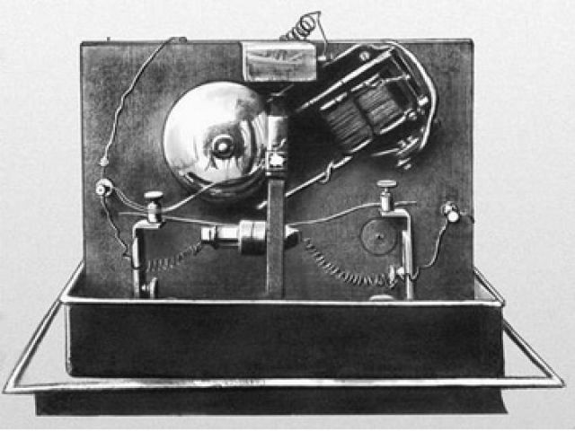

З 1889 Тесла приступив до досліджень струмів високої частоти і високої напруги. Винайшов перші зразки електромеханічних генераторів ВЧ (у тому числі індукторного типу) і високочастотний трансформатор (трансформатор Тесли, 1891), створивши тим самим передумови для розвитку нової галузі електротехніки — техніки ВЧ. У ході досліджень струмів високої частоти Тесла приділяв увагу і питанням безпеки. Експериментуючи на своєму тілі, він вивчав вплив змінних струмів різної частоти і сили на людський організм. Багато правил, вперше розроблені Теслою, увійшли в сучасні основи техніки безпеки при роботі з ВЧ-струмами. Він виявив, що при частоті струму понад 700 Гц електричний струм протікає по поверхні тіла, не завдаючи шкоди тканинам організму. Електротехнічні апарати, розроблені Теслою для медичних досліджень, набули широкого поширення у світі. Експерименти з високочастотними струмами великої напруги призвели винахідника до відкриття способу очищення забруднених поверхонь. Аналогічний вплив струмів на шкіру показав, що таким чином можливо видаляти дрібний висип, очищати пори і вбивати мікроби. Цей метод використовується в сучасній електротерапії.
Тесла одним з перших запатентував спосіб надійного отримання струмів, які можуть бути використані в радіозв'язку. Патент US Patent 447920 (Англ.), виданий у США 10 березня 1891 року, описував «Метод управління дуговими лампами» («Method of Operating Arc-Lamps»), в якому генератор змінного струму виробляв високочастотні (за мірками того часу) коливання струму близько 10 000 Гц. Запатентованою інновацією став метод придушення звуку, виробленого дуговою лампою під впливом змінного або пульсуючого струму, для чого Тесла придумав використовувати частоти, що знаходяться за рамками сприйняття людського слуху. За сучасною класифікацією, генератор змінного струму працював в інтервалі дуже низьких радіочастот. У 1891 на публічній лекції Тесла описав і продемонстрував принципи радіозв'язку. У 1893 році впритул зайнявся питаннями бездротового зв'язку і винайшов щоглову антену.
